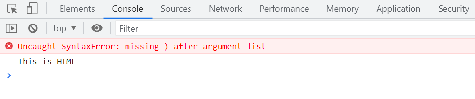

console.log() Function The console.log() function helps you identify errors with your javascript code, or help you enter some notes on what you are doing. If you see here, we will accidently forget using one double-quotation mark " in the javascript code.
When you will go to the console by right-clicking on the page and clicking on inspect, you will see an error. After correction, the error won't come. The following image depicts error on the console -
